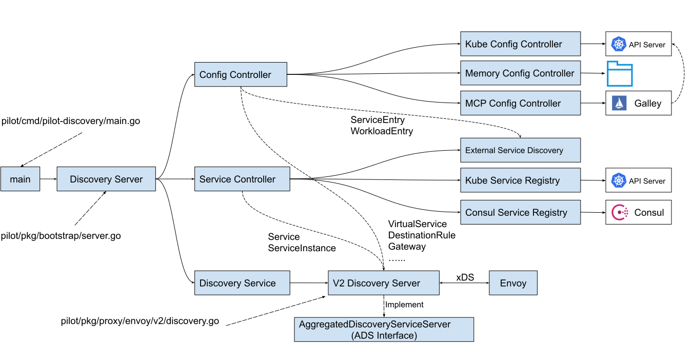

作为云原生服务网格领域的热门开源项目，Istio 可以为微服务提供无侵入的流量管理、安全通信、服务可见性等服务治理能力。目前越来越多的微服务项目开始考虑将自己的微服务基础设施向 Istio 进行迁移。
Istio 对 Kubernetes 具有较强的依赖性，其服务发现就是基于 Kubernetes 实现的。如果要使用 Istio，首先需要迁移到 Kubernetes 上，并使用 Kubernetes 的服务注册发现机制。但是对于大量现存的微服务项目来说，这个前提条件并不成立。很多微服务项目要么还没有迁移到 Kubernetes 上；要么虽然采用了 Kubernetes 来进行部署和管理，但还是使用了 Consul，Eureka 等其他服务注册解决方案或者自建的服务注册中心。
在这种情况下，我们如何能够以最小的代价快速地将现有微服务项目和 Istio 进行集成，以享受 Istio 提供的各种服务治理能力呢？本文将分析 Istio 服务注册机制的原理，并提出几种 Istio 与第三方服务注册中心集成的可行方案，以供读者参考。
Istio 服务模型
我们先来看一下 Istio 内部的服务模型。在 Istio 控制面中，Pilot 组件负责管理服务网格内部的服务和流量策略。Pilot 将服务信息和路由策略转换为 xDS 接口的标准数据结构，下发到数据面的 Envoy。但 Pilot 自身并不负责网格中的服务注册，而是通过集成其他服务注册表来获取网格中管理的服务。除此以外，Istio 还支持通过 API 向网格中添加注册表之外的独立服务。
图1 Istio 服务模型数据来源
从上图中可以得知， Pilot 中管理的服务数据有两处数据来源：
- Service Registry：来源于各个服务注册表，例如 Kubernetes 中的 Service 和 Consul Catalog 中注册的服务。Istio 通过特定的适配器连接这些服务注册表，由适配器将服务注册表中的私有服务模型转换为 Istio 内部支持的标准服务模型。
- Config Storage：来源于各种配置数据源中的独立服务，通过 Istio 定义的 ServiceEntry 和 WorkloadEntry 资源类型加入到 Pilot 的内部服务模型中。
Pilot 服务模型源码分析
Pilot 中涉及到服务模型的代码模块如下图所示：
 图2 Pilot 服务模型相关的代码结构
Pilot 的入口函数是 pilot/cmd/pilot-discovery/main.go 中的 main 方法。main方法中创建了 Discovery Server，Discovery Server 中和服务模型相关的主要包含三部分内容：
- Config Controller：用于管理各种配置数据，包括用户创建的流量管理规则和策略。配置数据中有两个 API 对象和服务模型相关，ServiceEntry 和 WorkloadEntry。Istio 目前支持三种类型的 Config Controller：
- Kubernetes：使用 Kubernetes 来作为配置数据的存储，该方式的直接依附于 Kubernetes 强大的 CRD 机制来存储配置数据，简单方便，是 Istio 缺省使用的配置存储方案。
- Memory：一个在内存中的 Config Controller 实现，可以监控一个文件目录，加载该目录中的 yaml 文件中定义的 Istio API 配置对象，该方式主要用于测试。
- MCP：通过 MCP(Mesh Configuration Protocol) 协议，可以接入一个到多个 MCP Server。Pilot 从 MCP server 中获取网格的配置数据，包括 ServiceEntry 和 WorkloadEntry 定义的服务数据，以及 VirtualService，DestinationRule 等路由规则等其他配置。Istio 中有一个 Galley 组件，该组件实现为一个 MCP Server，从 Kubernetes API Server 中获取配置数据，然后通过 MCP 协议提供给 Pilot。
- Service Controller：负责接入各种 Service Registry，从 Service Registry 同步需要在网格中进行管理的服务，目前Istio支持的Service Registry包括：
- Kubernetes：对接 Kubernetes Registry，可以将 Kubernetes 的 Service 和 Endpoint 采集到 Istio 中。
- Consul： 对接Consul Catalog，将注册到 Consul 中的服务数据采集到 Istio 中。
- External Service Discovery：该 Service Registry 比较特殊，后端并未对接到一个服务注册表，而是会监听 Config Controller 的配置变化消息，从 Config Controller 中获取 ServiceEntry 和 WorkloadEntry 资源，然后以 Service Registry 的形式提供给 Service Controller。
- Discovery Service：将服务模型和控制面配置转换为数据面标准数据格式，通过 xDS 接口下发给数据面的代理。主要包含下述逻辑：
- 启动GRPC Server并接收来自Envoy端的连接请求。
- 接收Envoy端的xDS请求，从Config Controller和Service Controller中获取配置和服务信息，生成响应消息发送给Envoy。
- 监听来自Config Controller的配置变化消息和来自Service Controller的服务变化消息，并将配置和服务变化内容通过xDS接口推送到Envoy。
第三方服务注册表集成
Consul 集成
鉴于和 Kubernetes 的紧密关系，Istio 在最初只重点关注了 Kubernetes 服务注册的集成。虽然在 Istio 最初的版本中也有 Consul 和 Eureka 的适配代码，但这些代码基本只是处于原型验证的节点，存在较多的故障和性能问题。
由于在项目中采用了 Consul 作为自研服务注册的后端存储，我们在和 Istio 进行集成时对 Consul 的适配进行了大量测试和研究，并解决了一些功能和性能效率方面的问题。这些 Consul 适配的问题解决后已经合入了 Istio 版本中，参见这些 PR：
- Use watching instead of polling to get update from Consul catalog #17881
- Fix: Consul high CPU usage (#15509) #15510
- Avoid unnecessary service change events(#11971) #12148
- Use ServiceMeta to convey the protocol and other service properties #9713
这些问题处理后，Consul 注册表的集成已经基本可用。要将 Consul 接入到 Pilot 中， 只需要在 pilot-discovery 的启动命令中通过这两个参数指定 registry 类型和 consul 的连接地址即可： --registries Consul --consulserverURL http://$consul-ip:$port。
其他服务注册表的集成
虽然在 1.0 中还有 Eureka 的适配代码框架，但在 Istio 后面的版本完全删除了 Eureka 适配的相关代码。除了 Kubernetes 和 Consul 之外，原生 Istio 代码不支持其他服务注册表。但通过前面对 Pilot 服务模型源码的分析，我们可以得出以下三种将其他服务注册表集成到 Istio 的方式。
 图3 集成第三方服务注册表的三种方式
图3 集成第三方服务注册表的三种方式
上图中分别用红、绿、蓝三种颜色标识了这三种不同的集成方式。
自定义 Service Registry 适配器
如图3中红色箭头所示，我们可以编写一个自定义的适配器来集成第三方服务注册表。该自定义适配器从第三方服务注册表中获取服务和服务实例，转换为 Pilot 内部的标准模型，集成到 Service Controller 中。自定义适配器需要实现 serviceregistry.Instance 接口。该方式的原理和 Consul Service Registry 的适配是类似的，可以参照 Consul Service Registry 的适配代码进行编写。
实施该方案需要熟悉 Pilot 内部服务模型和 Service Registry 适配相关 Istio 源码，并且需要将自定义适配器代码和 Pilot 代码一起编译生成定制的 Pilotd 二进制执行文件。该方案的问题是和 Istio 代码耦合较强，后续 Istio 版本升级时可能需要修改适配器代码并重新编译。
自定义 MCP Server
这种集成方式的业务流程参见图3中的蓝色箭头。该方案需要编写自定义的 MCP Server 从第三方注册表中获取服务和服务实例，然后转换为 ServiceEntry 和 WorkloadEntry 资源，通过 MCP 协议提供给 Pilot 中的 MCP config Controller。
采用这种方式，需要在 Global Mesh Options 中通过 configSources 参数设置自定义 MCP Server 的地址。需要注意的是，目前1.6的 Config Controller 实现不允许同时使用不同类型的Config controller。这意味着如果采用自定义 MCP Server 来获取第三方注册表中的服务数据，也必须同时采用 Galley 来获取其他控制面的配置。
configSources:
- address:istio-galley.istio-system.svc:9901
- address:${your-coustom-mcp-server}:9901
而从1.5版本开始，Galley 的功能已经被合并到 Istiod 中，并且缺省被禁用。从 Istio 控制面简化的趋势来看，Galley 后续很可能会被逐渐放弃，其自身功能的稳定性也值得怀疑。因此我不建议在产品中启用 Galley。
除此以外，根据 Istio 社区中的这个 MCP over XDS proposal，社区正在讨论使用 XDSv3/UDPA 代替目前的 MCP 协议来传输配置数据，因此 MCP server 和 Pilot 的通信机制在 1.7 版本中很可能变化。
向 API Server 写入 ServiceEntry 和 WorkloadEntry
该集成方式的业务流程如图3中绿色箭头所示。我们只需要编写一个独立的服务，该服务从第三方法服务注册表中获取服务和服务实例数据，然后转换为 Istio 的 ServiceEntry 和 WorkloadEntry 资源，通过 Kubernetes API Server 的接口写入到 API Server 中。 Pilot 中自带的 Kube Config Controller 会监听 Kubernetes API Server 中和 Istio 相关的资源对象的变化，并将 ServiceEntry 和 WorkloadEntry 转换为 Piolt 的内部服务模型。
小结
本文分析了 Istio 和第三方服务注册表集成的几种可能的方式。如果你使用的是 Consul，可以通过配置参数设置 Consul 的连接地址，将 Consul 集成到 Istio 中。 对于其他的服务注册表，有以下三种可选的集成方案： 自定义的 Service Registry 适配代码，自定义 MCP Server，或者采用一个独立服务向 API Server 写入 ServiceEntry 和 WorkloadEntry。 有需要的读者可以根据项目的实际情况选择采用哪一种方法。由于第一种和第二种方法目前都存在一些问题，建议先采用第三种方式，待 Istio 对 Galley 和 MCP 的改造彻底完成后再考虑向第二种方式迁移。
备注：本文的分析和建议都是基于使用 Istio 1.6 的前提下。随着 Istio 版本的不断发展，其服务模型和注册相关机制可能发生变化，和第三方服务注册表的集成方式也可能变化。